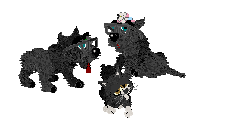

Go back
What you're looking at below is two petz families.
Yes, those are the biological offspring of the couples they're standing next to.

Some of you may have seen the glitch where cats can birth dogs, but getting the opposite to happen took some figuring out.
Making Cats Birth Dogs
This one is pretty easy. All you need to do is have a cat and dog breed with the exact same name.
Then you just adopt two of the cat breed and breed them... and VOILA!
This does not look pretty. To make the offspring cuter, you will need to steal the LNZ from a regular dog.
And there you go! You have a dog with cat parents!
Click here to download the cat puppy family!
Please note that breeding two dogs of the dog breed together will only give you a dog.
Making Dogs Birth Cats
This one will be a bit trickier. To accomplish this, you need to switch around the .dog and .cat extensions.
Please note that you have to do this using LNZ Pro, simply changing the file names will make the breeds not show up in the game.
After you do the switcheroo, put the .dog cat file in the DOGZ folder and the .cat dog file in the CATZ folder.
If all of this is done correctly, you should now see your dog in the catz section of the adoption center and your cat in the dogz section.
So now you just adopt your dogs, breed them, and change the offspring LNZ to a regular cat just like how the previous instructions said.
Now enjoy your skinstealing abomination babies!
Click here to download the dog kitten family!
By the way, I'm still trying to figure out how to get them to birth bunnies and pigs :(